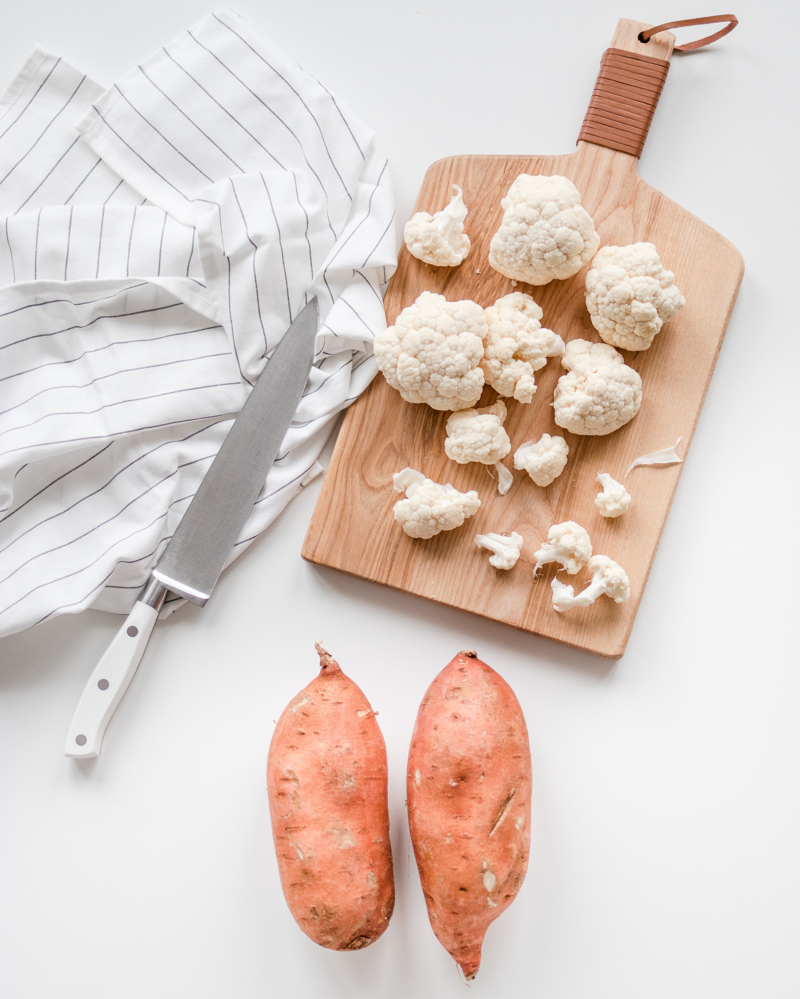

Traditional Dutch

Let's get started
This is a traditional Dutch dish that's fairly easy and quick to make. It's Dutch-style made in a way only the Dutch people do it, for the lovers of trying different food cultures here.
You could try different things with this, or adjust the amount of any of the ingredients for example to your own liking. Just try things out and see what you like best!
Ingredients
- Potatoes
- Cauliflower
- Cordon bleu
Steps
- Peel the potatoes and put them in water
- Put 2 pans of boiling water on the pits and preheat the oven on 180 degrees Celsius
- Cut the cauliflower and potatoes in pieces and put them in the pan
- Put the cordon bleu in the oven and wait 20 minutes
- Drain the potatoes and cauliflower
- Get the cordon bleu out of the oven and your dinner is ready